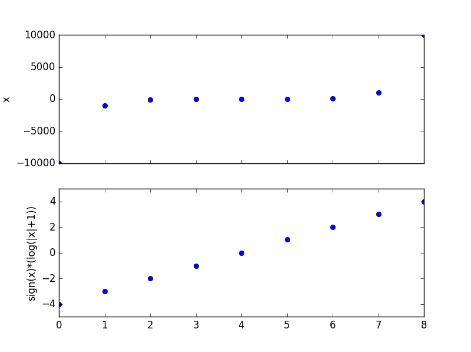

Sometimes you have to show positive, zero and negative number in log scale. However you cannot take log of negative numbers and zero. But one could approximate it with a log transform modulus as stated here.
In Python with numpy:
from numpy import sign, abs, log10
import matplotlib.pyplot as plt
# Data varies in several magnitudes and has both positive, zero and negative numbers
x = [-10000,-1000,-100,-10,0,10,100,1000,10000]
# log modulus transform
x_log_modulus_transform= sign(x)*(log10(abs(x)+1))
f, ax = plt.subplots(2, sharex=True)
ax[0].plot(x,'o')
ax[0].margins(x=0.12, y=0.2) # for better visualization of datapoints at the end of axis
ax[1].plot(x_log_modulus_transform,'o')
ax[1].margins(x=0.12, y=0.2) # for better visualization of datapoints at the end of axis
ax[0].set_ylabel('x')
ax[1].set_ylabel('sign(x)*(log(|x|+1))')
plt.show()
